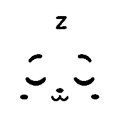
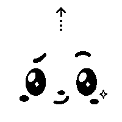
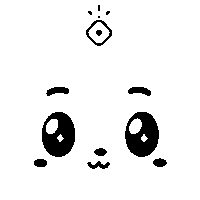
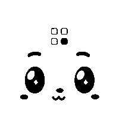

16 个可见情绪和功能故事同时播放；每张图都由同一套 200x200 组件计划实时切帧。
entry / calm_entry / 220 ms
默认日常脸，眼神轻动后回到正中。
entry / warm_entry / 220 ms
互动记忆较高时的温和回应。
entry / question_entry / 180 ms
眼神和眉毛先带动，再出现表情自有问号。
entry / exclamation_entry / 180 ms
眉眼先进入提醒，再出现表情自有感叹号。
entry / playful_entry / 220 ms
高光先活跃，随后回到轻快保持。
entry / sleep_entry / 420 ms
困眼、眉和嘴依次进入，只有 ZZZ 轻轻上浮。
entry / delighted_entry / 220 ms
抬眉、开口笑和高腮点形成清楚的开心反应。
entry / bashful_entry / 220 ms
收拢的眉、贴近嘴角的腮点和小笑意表达害羞。
entry / thoughtful_entry / 220 ms
一高一低眉与偏位思考嘴带出安静停顿。
entry / focused_entry / 220 ms
低而圆的收拢眉与短横嘴表达稳定专注。
entry / recording_input_0 / 260 ms
日常脸旁边播放输入麦克风波纹，绝不覆盖脸。
同一输入小饰件可与独立温暖表情同时存在。
entry / bottom_connector_charging_0 / 300 ms
日常脸下方显示机座、接触垫和上升能量刻度，不替换脸。
entry / upgrade_progress_0 / 420 ms
活泼脸上叠加独立上行进度装饰。
entry / error_caution_0 / 220 ms
平静脸上叠加独立紧凑警示装饰。
entry / menu_grid_arrive / 140 ms
仅短暂显示；随后组件 Rig 完全撤出，菜单独占屏幕。
按住轻点或拖动 200x200 面板，眼内高光和小星光切到正中/左/右/上/下端点；松手回到正中。
目标：正中
动作：等待轻点或拖动
每张图都是同一套 200x200 组件计划的真实帧；功能状态只叠加小饰件，不替换脸。



